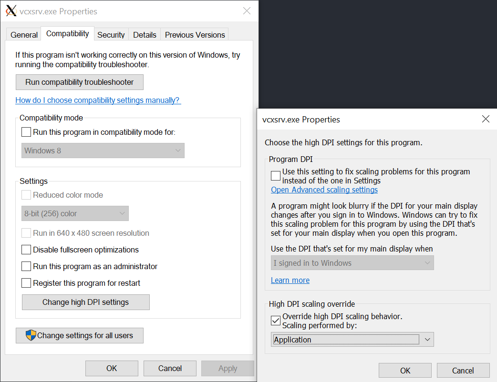

在 Windows 10 上装 X
Motivation： 为啥装 X？
- 在 WSL 还在刀耕火种时期，想要在 WSL 上使用 GUI 应用需要 Windows 上安装有 X server
- 想不用 MobaXTerm 或者 PuTTY (这些为 Windows 设计的 terminal emulator 开发比较完善，内建 X forwarding 解决方案) 也能转发 GUI 时需要 Windows 上装有 X server 才能 forwarding
安装 Xserver 和 HiDPI 设置
Windows 上的 Xserver 有好几个选择，我用的是 VcXsrv。如果你用 choco 或者 scoop，还能更方便，可以直接 choco install vcxsrv 或者 scoop install vcxsrv（不过 scoop 需要先 scoop bucket add extras）。
可爱强强又富有的狗哥推荐了微软应用商店的 X410，看起来和 Windows 10 整合得很优秀，不过真的好贵啊……
然后是 HiDPI 设置，一般通过轻薄本现在应该都至少是 2K 或 3K 屏幕了。不设置一下的话字体会糊。
首先找到软件的安装路径，比如 C:\Program Files\VcXsrv，然后对两个可执行文件 vcxsrv.exe 和 xlaunch.exe 执行以下操作：
- 右键点击可执行文件
- 进入
Properties -> Compatibility -> Change high DPI settings -> High DPI scaling override - 选中
Override high DPI scaling behavior - 将 Scaling performed by 选项设为 Application

服务器端设置
确保要连接到的服务器上 sshd 被正确配置。在 /etc/ssh/sshd_config 中确保 X11Forwarding 被设置为 yes。
X11Forwarding yes
如有需要，可以设置 X11DisplayOffset，默认是 10。
X11DisplayOffset 10
启动 Xserver
在开始菜单查找 XLaunch 并运行，一路默认就可以开启 Xserver。
如果之前设置了 X11DisplayOffset，在启动时注意不要让 vcxsrv 自己设置 DISPLAY (默认 -1），不然它会随机选一个数字……在之后设置客户端的时候有点头痛。
如果是 WSL2，记得还要关闭 access control。用命令行的话就是添加 -ac 选项。
客户端 (Windows/WSL) 设置
为了能够成功进行 X forwarding，客户端需要设置好 $DISPLAY 环境变量。这可不是 Unix，没法直接 export DISPLAY=:0。想要把远端 forward 到 Windows 上看下面的 "Windows 设置", "WSL 设置" 是为了在 WSL 上使用 GUI 应用的。
Windows 设置
打开 PowerShell，输入以下指令即可在当前 terminal 临时设置 DISPLAY 环境变量：
$env:DISPLAY='localhost:<display_offset>.0'
如何一劳永逸：打开你的 PowerShell profile 文件（一般是 $HOME\Documents\WindowsPowerShell\Microsoft.PowerShell_profile.ps1，也可以 notepad $PROFILE 打开， $PROFILE 不区分大小写），把上面的指令加进去， 再 . $PROFILE 一下就好了。
WSL 设置
WSL1 可以 export DISPLAY=localhost:10.0 ， WSL2 就要指定 IP 了。 可以这样一劳永逸：
export DISPLAY=$(awk '/nameserver / {print $2; exit}' /etc/resolv.conf 2>/dev/null):10.0
这里也设置了一下 LIBGL_ALWAYS_INDIRECT，虽然窝目前好像也没什么 3D rendering 需要……
export LIBGL_ALWAYS_INDIRECT=1
然后是 WSL 方面的 HiDPI 显示设置，当然是有多种解决方案的。参考 Arch Linux wiki 有关 HiDPI 的页面 （写得超级棒！），感觉设置 GTK（GDK）的环境变量是最泛用的。
我的方案：
export GDK_SCALE=1
export GDK_DPI_SCALE=1.5
这个数值在小新 Pro 13 的 2K 屏幕上对于大多数应用效果都不错。不过 JB 家的 IntelliJ IDEA 和 CLion 因为是 Swing 应用， UI scale 只支援整数倍，1.5 似乎相当于 scale 到 2 了，导致字都看起来非常大……不过可以通过调整字体大小解决。
这个表格大致整理了应该修改哪些地方（基于 CLion 2020 的菜单层级）：
| 设置项 | 作用 |
|---|---|
Appearance & Behavior > Appearance > Use Custom Font | 设置绝大多数 UI 字体 |
Editor > Font 或 Editor > Color Scheme > Color Scheme Font | 设置编辑器（写代码的区域）的字体 |
Editor > Color Scheme > Console Font | 设置内建终端（Integrated Terminal）的字体 |
大功告成！
设置好 DISPLAY 和 HiDPI 支援并开启 Xserver 之后就能运行 GUI 应用了。
可以拿 xeyes 测试一下：
sudo apt install x11-apps
xeyes
不出意外你就能看到熟悉的弱智小眼球了。
也能正常使用安装在 WSL 的 Sublime Text、CLion、IntelliJ IDEA 等等。
JetBrains IDE 的进一步调整
装了 JB 家的几个 IDE 之后发现没法即开即用，还要再配置点东西。
Use Windows default browser
WSL 没有默认浏览器（当然），而 JB 家 IDE 的 markdown 渲染器依赖 JCEF，所以必须得有个浏览器。我们可以用 Windows 的浏览器：
打开 Settings > Tools > Web Browsers，将 Default Browser 的路径改为 /mnt/c/path/to/your/browser/browser.exe 即可。
Resolve JCEF dependency issue
JCEF 依赖的 libcef.so 和 libjcef.so 两个库都有一大堆依赖。根据 event log 的报错安装一下就好了。我缺 libXss 和 libgbm：
$ sudo apt install libxss1 libgbm1
CJK 字体支援
当然可以手动安装字体，不过也可以在 /usr/share/fonts/ 创建连到 Windows 字体库的软链接：
sudo ln -s /mnt/c/Windows/Fonts/ /usr/share/fonts/WindowsFonts
然后 logout 再登入，或用 fc-cache 手动 index 字体库，即可愉快阅览中日韩内容。
fc-cache -f -v
其他
Windows 计划推出 WSLg，以后估计就不用这样了。